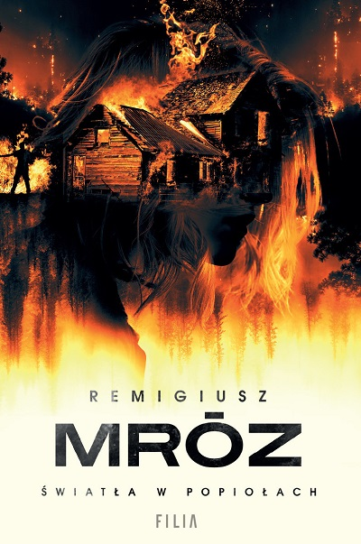

|  |
|
| Opis:
Wiele lat temu w trakcie licealnej imprezy w Żeromicach doszło do tragedii – dwoje nastolatków spłonęło w starym, porzuconym pustostanie. Sprawa została zakwalifikowana jako wypadek i odcisnęła się na lokalnej społeczności tak silnym piętnem, że nikt do niej nie wraca. Do czasu. Pewnego dnia w okolicy bowiem odnajduje się zwęglone ciało, które sprawia wrażenie, jakby zostało wyniesione z dawnych zgliszczy i przeniesione w czasie. Czy należy do jednej z rzekomych ofiar? A jeśli tak, to jakim cudem ta wówczas przeżyła? I kto po tylu latach zamordował ją w tak upiorny sposób? Odpowiedzi poszukuje wracająca po urlopie macierzyńskim Kaja Burzyńska. Do pomocy zaś musi zaangażować mężczyznę, z którym od przeszło roku nie była sam na sam. I który nie ma pojęcia, że jest ojcem jej nowo narodzonego dziecka. |
|